ブリュッセル行ってきた
ブリュッセル行ってきた
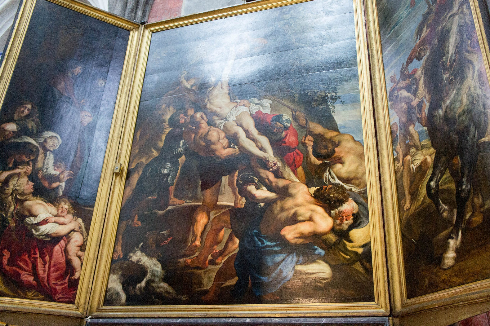
FOSDEMに参加するためにブリュッセルに行ってきた。FOSDEMについてはまだ別のところで書くかもしれないので書かない。ここではブリュッセルについて。
ヨーロッパに住んでいたが、基本的にはイギリス、フランス、地中海地域しか行ったことがないので、ドイツ文化圏に近い地域に行くのはとても楽しみだった。ちなみにオランダにもちょっとだけ行ったことはある。
ブリュッセルはベルギーの第一の都市・首都でこの町には1〜2世紀から人間が住んでたようだ。ちなみにジュリアスシーザー関連の書籍にはガリア戦記の項に「ベルガエ地方」という表現が出てくるので、ベルギーという地域には紀元前1世紀前後にはすでにそれなりの人が住んでいたのだろう。ともあれ2000年近い歴史がある町らしくブリュッセルはすごくちゃんと開発された都会の町だった。
町のたたずまいはパリっぽかった。小パリとも呼ばれる事があるという文献も読んでなるほどと思う。石で舗装された道路は少しだけうねっていて、でもそれなりにちゃんと手入れをされている感がある。小さい路地も多くて、一人で行っていたらもう少し迷い込んでもいいかな、と思う程度にはこちらの好奇心をくすぐってくれた。
空き時間に観光に行くときは基本メトロ（地下鉄）を使った。メトロは本当は磁気カードのほうが便利そうだったけど、事前になんも調べてなかったので自販機で紙のチケットを買って乗った。基本トラム（路面電車）、バス、メトロは全部同じチケットで利用できるのだが、メトロ以外ではチケットを買えるところがよくわからなかった。メトロの自販機はほとんどクレジットカードが使えず、何個か並んでいるうちの一つか二つでクレジットカードが使える。それ以外はこの地域で使えるデビットカード対応している。もちろん人がいるキオスクもあるのでそっちで買えば良い。トラムでは何人かが運転手から直接チケットを買っているシーンを見た。多分ほとんどの人は磁気カードを使っているから問題にならないのだろう。
いわゆる観光名所が集まっているのは旧市街エリア。ここまで来てしまうと観光名所は徒歩で楽にほぼ全て回れる。我々はArts-lois駅で降り、そこから歩いて行った。
とりあえず Cathédrale des Sts Michel et Gudule（サンミシェル大聖堂）を目指して歩く。途中それがそうだとは知らずにGaleries Royales Saint-Hubert（ギャルリー・サンテュベール）を通る。ヨーロッパ最古のアーケードだそうだ。まだ時間が早かったので店が全然開いていなかったので後で戻ることにして素通り。
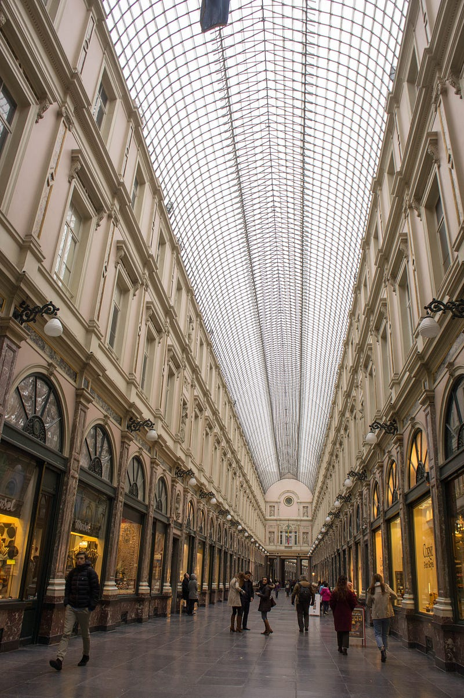
サンミシェル大聖堂はひたすら美しかった。自分は全く信仰心というものを持ち合わせていないんだが、欧州の宗教施設に行くと彼らヨーロッパ人たちがこれらの施設にかけた情熱には感嘆の声を漏らさずにはいられない。
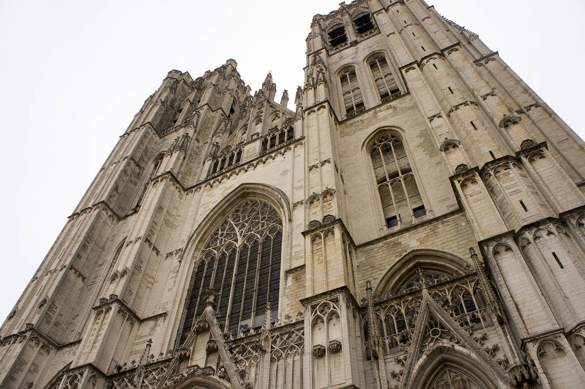
この大聖堂は比較的小ぶりで細長く、「大聖堂」としては巨大というわけではないけれどもバランスやデザインが最高だった。
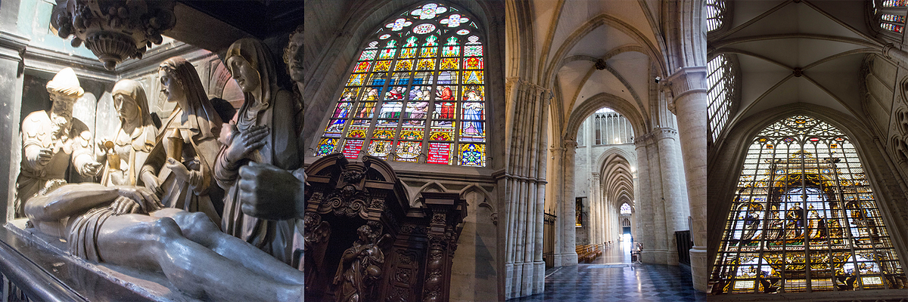
Grand-Place （グランプリュ）もどんなもんか確認。美しい町並みだが、まぁここは見るだけな感じ。ランチ時に来ればちょっとご飯を食べるという手もあったかもしれない。
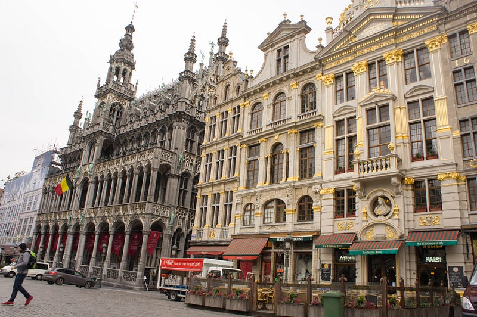
世界三大がっかりのひとつの小便小僧をチラ見。いや、本当にがっかりという言葉しっくりくる。怒るとかそういうのではなく、本当に「お、おう…」という感じ。次は人魚姫ですね！
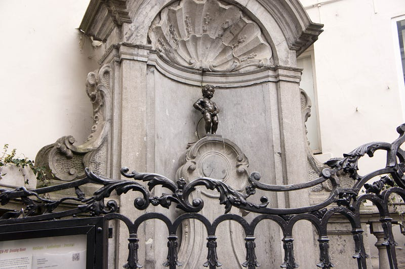
適当なカフェに入り、お茶。ブリュッセルはフランス語の町。地域的にはフラマン語も使うらしいのでオランダ語も通じるらしい。オランダ語は6ヶ月、フランス語は1ヶ月しか勉強していないのでまぁ読めるけど喋れない自分は心を強く持ち「英語分かって当たり前だろ」という顔をして全ての会話を英語で進めた。ほとんどの人は多少アクセントがあったとしても普通に英語を喋れるので問題はなかったが、時々英語は駄目な人もいた。ともかくエンヤ婆の台詞を思い出しながら（「…できて当然と思うことですじゃ！」）英語で全て強行突破した。まぁ問題はない。
さらに歩いて王宮をチラ見して（王宮自体はこの時期は中に入れないと聞いていた）、王宮地下のコーデンベルグ宮殿遺跡を見る。日本の建築だと同じ場所に何かを建てる場合は更地にしてから次を建てる気がするけど、過去のヨーロッパ人達は必要な分だけ壊したらあとは埋めてしまうのか…
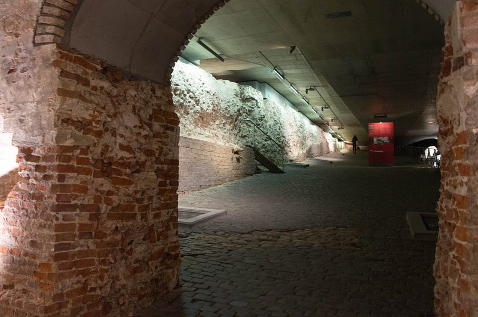
その後王立美術館を見てだいたい終了。王立美術館は”From Floris To Rubens”という展示をしててルネッサンス前の11世紀頃から17世紀頃までの絵画の変遷が順番に見られた。さらにルーベンス部屋には巨大な絵画があって大迫力だった。
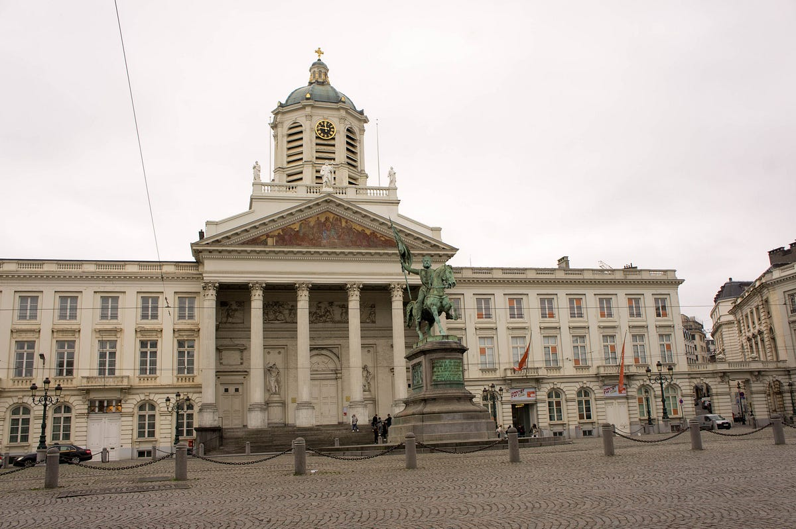
Antwerp — アントワープ
ブリュッセルを離れる日は飛行機が夜の便だったので電車に乗ってアントワープ見物をする事に。ブリュージュという案もあったんだけどより近い方にした。
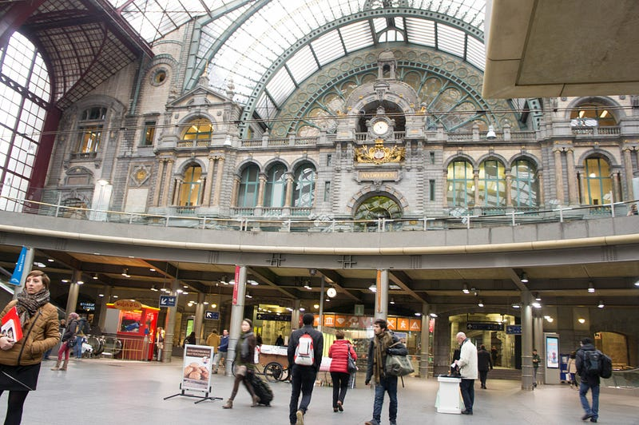
アントワープは「ダイヤの町」として記憶していたのだけど、それしか知らなかったので行く前に色々調べてみたところ過去においては戦略的にも交易においても重要な町だったらしくなかなかおもしろい歴史がある町だった。
アントワープはブリュッセルから電車で約40分強。明らかにRoundtripって言ったのに片道切符をくれたりしたが、基本的には一瞬で着くし快適な旅だった。ちなみに片道8ユーロ前後だった。
Rubenshuis（ルーベンスの家）とかに行こうと思って歩き出したものの、入り口が見つからず… なんとなく中庭があるのはわかったけど、もう面倒くさくなったので次の場所へ。Museum Plantin-Moretus（プランタン＝モレトゥス博物館）に入ろうかと思ったら休館日…！！！ しょうがない、もう大聖堂いくぞ！ということで日本人が大好きなOnze-Lieve-Vrouwekathedraal (ノートルダム大聖堂)へ。
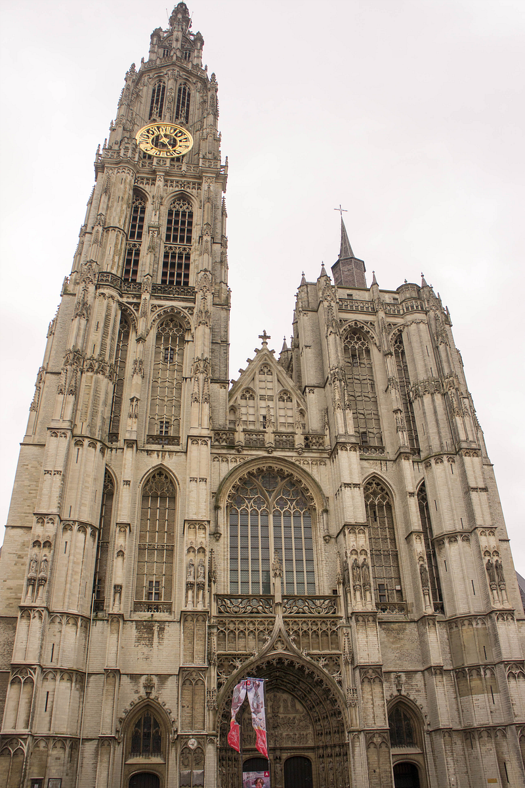
ブリュッセルのサンミシェル大聖堂より広いが、前に書いたように自分の好みとしてはサンミシェル大聖堂のほうが好き。ひょっとすると絵とかの展示物が視線を阻害しているからかも。ただ調度品とかはこちらのほうが数が多いのでその分見応えはある。
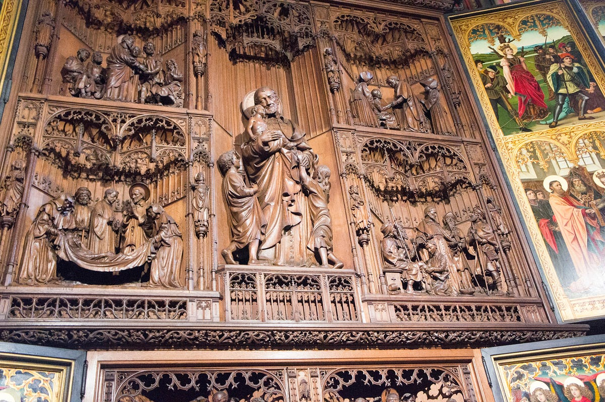
フランダースの犬の碑は見たけど写真を撮っていなかった。アントワープに突然日本語の碑があるのすごい違和感があった… そしてこの後は時間と体調の問題もあって街を見ながら駅まで戻り、ブリュッセル空港へと向かった。
Cuisine — 食べ物飲み物
ブリュッセルはいわゆる都会なので繁華街にはかなり国際色豊かなレストラン群があった。和食もたくさんあったけど、今回は冒険せず。観光地でどこに入ったらいいのかわからなくなりレバノン料理を食べたりもした。
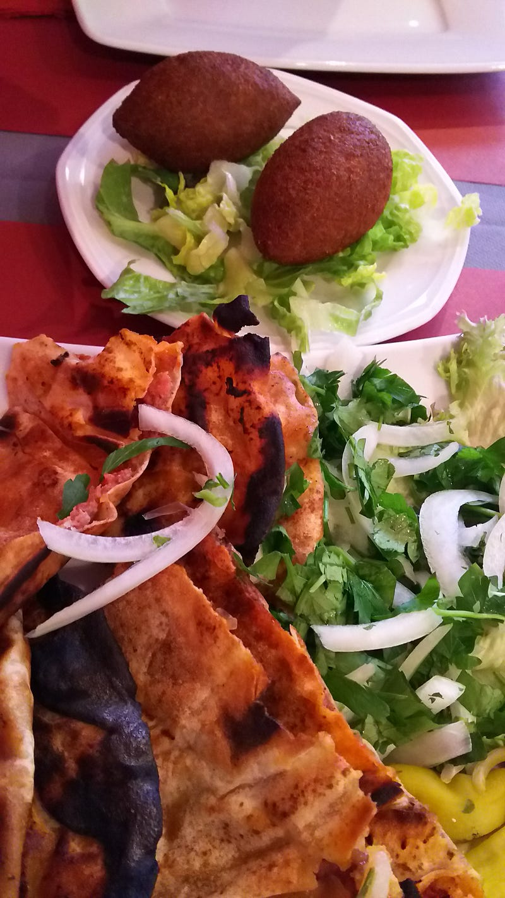
基本はフランス料理なのだと思う。もちろんイタリアンもたくさんあったけど、文化的にはフランス文化の影響が強い…ような気がした。
フライドポテトが有名だけど、基本的にはどの店でもサイドにフライがつくので別途食べることはなかった。あとワッフルも食べなかった。
勝手に「この国は海と面してないんだっけ？」という認識を持っていたけど、日本でいうと京都みたいな感じで北側が海に面していた。ビールを飲みながらシーフードサラダを食べる、ということもあった。大変おいしかった。
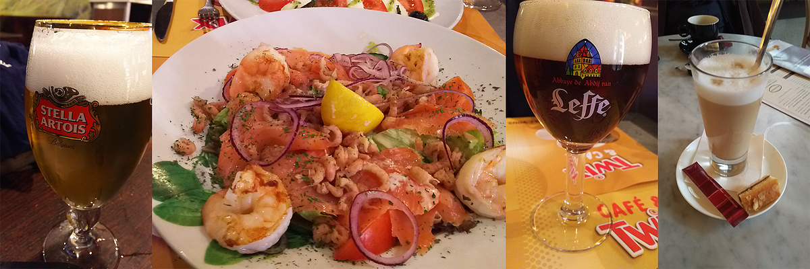
鴨、羊、日本でも食べられるけど、たっぷり食べられるのは大変よい。
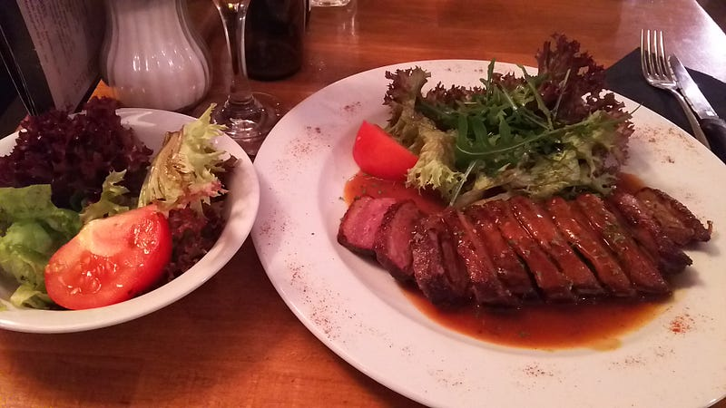
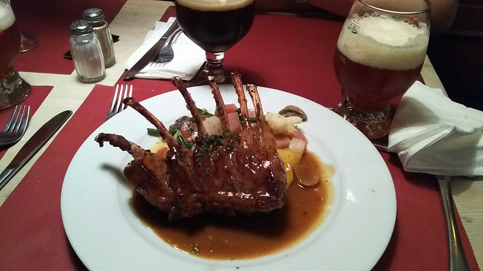
ビールもたっぷり飲んだ。また行きたい。英語喋れるならなにも問題なく楽しめる街なのでオススメです。